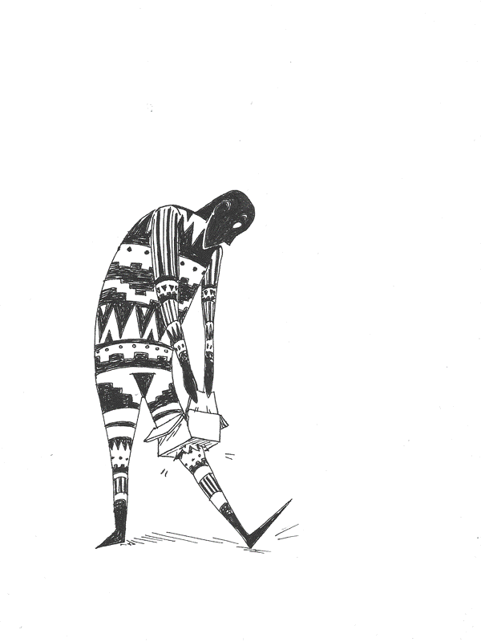
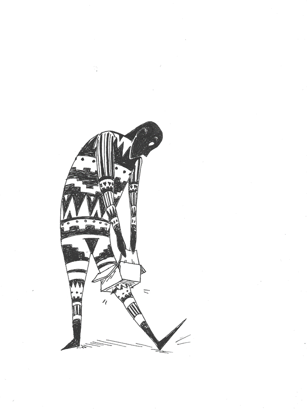
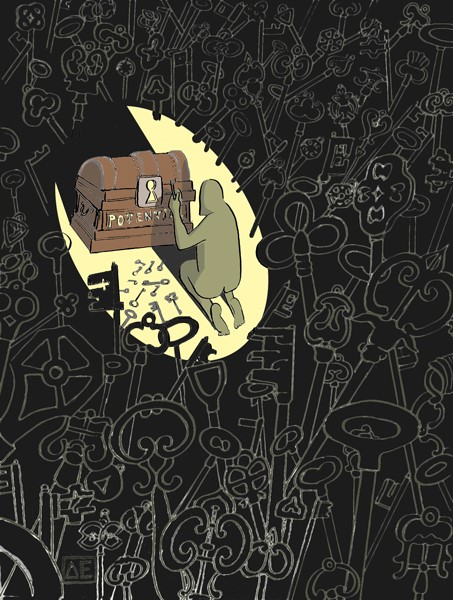
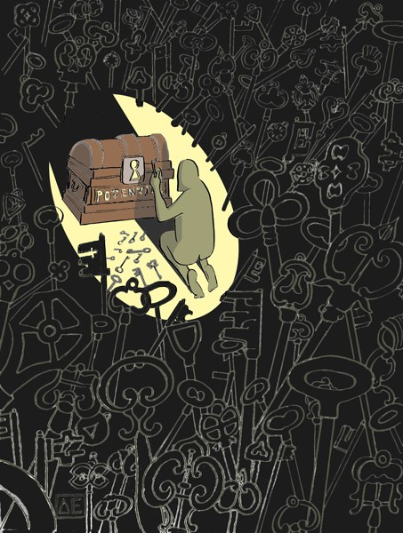

Sign up to receive Amanda's
blog posts by email.
Art
Paintings
Media is either digital painting, gouache, or dip pen and ink.


Editorial Illustration
Work inspired heavily by accomplished illustrator, Victo Ngai. Traditional drawing style that is then scanned, manipulated, and colored digitally.


Cheating College
Concepts related to education, work, conformity, and finanical anxiety.


 

 



Sketches


 <img src="../assets/img/art/sketches/raven-lunatic-recipes.jpg", caption="Raven Lunatic Recipes, digital">
<img src="../assets/img/art/sketches/raven-lunatic-recipes.jpg", caption="Raven Lunatic Recipes, digital">


Dreams


Travel Journal


Graphic Design


Studies
Life Drawing


People Sketching